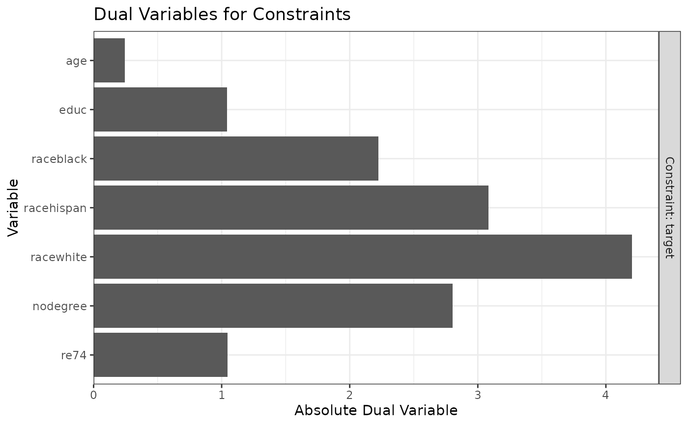

This page explains the details of estimating stable balancing
weights (also known as optimization-based weights) by setting method = "optweight" in the call to weightit(). This method can be used with binary, multi-category, and continuous treatments.
In general, this method relies on estimating weights by solving a quadratic
programming problem subject to approximate or exact balance constraints. This
method relies on optweight::optweight.fit() from the optweight
package.
Because optweight::optweight() offers finer control and uses the same syntax as
weightit(), it is recommended that optweight() be used
instead of weightit() with method = "optweight".
Binary Treatments
For binary treatments, this method estimates the weights using
optweight::optweight.fit(). The following estimands are allowed: ATE, ATT,
and ATC. The weights are taken from the output of the optweight.fit fit object.
Multi-Category Treatments
For multi-category treatments, this method estimates the weights using
optweight::optweight.fit(). The following estimands are allowed: ATE and
ATT. The weights are taken from the output of the optweight.fit fit object.
Continuous Treatments
For continuous treatments, this method estimates the weights using
optweight::optweight.fit(). The weights are taken from the output of the
optweight.fit fit object.
Longitudinal Treatments
For longitudinal treatments, the weights are the product of the weights estimated at each time point. This method is not guaranteed to yield exact balance at each time point. NOTE: the use of stable balancing weights with longitudinal treatments has not been validated and should not be done!
Sampling Weights
Sampling weights are supported through s.weights in all scenarios, but only
for versions of optweight greater than or equal to 1.0.0.
Missing Data
In the presence of missing data, the following value(s) for missing are
allowed:
"ind"(default)First, for each variable with missingness, a new missingness indicator variable is created which takes the value 1 if the original covariate is
NAand 0 otherwise. The missingness indicators are added to the model formula as main effects. The missing values in the covariates are then replaced with the covariate medians (this value is arbitrary and does not affect estimation). The weight estimation then proceeds with this new formula and set of covariates. The covariates output in the resultingweightitobject will be the original covariates with theNAs.
Details
Stable balancing weights are weights that solve a constrained
optimization problem, where the constraints correspond to covariate balance
and the loss function is the variance (or other norm) of the weights. These
weights maximize the effective sample size of the weighted sample subject to
user-supplied balance constraints. An advantage of this method over entropy
balancing is the ability to allow approximate, rather than exact, balance
through the tols argument, which can increase precision even for slight
relaxations of the constraints.
The function of the weights that is optimized can be changed using the norm argument. The default norm = "l2", minimizes the variance of the weights (i.e., maximizes the ESS). norm = "entropy" minimizes the negative entropy of the weights and is equivalent to entropy balancing, though in this implementation, inexact balance is allowed. norm = "log" minimizes the sum of the negative logs of the weights and is equivalent to nonparametric covariate balancing propensity score weighting (npCBPS). See optweight::optweight.fit() for the other allowed options to norm and other arguments.
plot() can be used on the output of weightit() with method = "optweight"
to display the dual variables; see Examples and plot.weightit() for more
details.
Note
The specification of tols differs between weightit() and
optweight(). In weightit(), one tolerance value should be included per
level of each factor variable, whereas in optweight(), all levels of a
factor are given the same tolerance, and only one value needs to be supplied
for a factor variable. Because of the potential for confusion and ambiguity,
it is recommended to only supply one value for tols in weightit() that
applies to all variables. For finer control, use optweight() directly.
Seriously, just use optweight::optweight(). The syntax is almost
identical and it's compatible with cobalt, too.
Additional Arguments
momentsinteger; the highest power of each covariate to be balanced. For example, ifmoments = 3, each covariate, its square, and its cube will be balanced. Can also be a named vector with a value for each covariate (e.g.,moments = c(x1 = 2, x2 = 4)). Values greater than 1 for categorical covariates are ignored. Default is 1 to balance covariate means.intlogical; whether first-order interactions of the covariates are to be balanced. Default isFALSE.quantilea named list of quantiles (values between 0 and 1) for each continuous covariate, which are used to create additional variables that when balanced ensure balance on the corresponding quantile of the variable. For example, setting
quantile = list(x1 = c(.25, .5. , .75))ensures the 25th, 50th, and 75th percentiles ofx1in each treatment group will be balanced in the weighted sample. Can also be a single number (e.g.,.5) or a vector (e.g.,c(.25, .5, .75)) to request the same quantile(s) for all continuous covariates. Only allowed with binary and multi-category treatments.
All arguments to optweight.fit() can be passed through weightit() or weightitMSM(), with the following exception:
targetscannot be used and is ignored.
All arguments take on the defaults of those in optweight.fit().
Additional Outputs
infoA list with one entry:
dualsA data frame of dual variables for each balance constraint.
objWhen
include.obj = TRUE, the output of the call tooptweight::optweight.fit().
References
Binary treatments
Wang, Y., & Zubizarreta, J. R. (2020). Minimal dispersion approximately balancing weights: Asymptotic properties and practical considerations. Biometrika, 107(1), 93–105. doi:10.1093/biomet/asz050
Zubizarreta, J. R. (2015). Stable Weights that Balance Covariates for Estimation With Incomplete Outcome Data. Journal of the American Statistical Association, 110(511), 910–922. doi:10.1080/01621459.2015.1023805
Multi-Category Treatments
de los Angeles Resa, M., & Zubizarreta, J. R. (2020). Direct and Stable Weight Adjustment in Non-Experimental Studies With Multivalued Treatments: Analysis of the Effect of an Earthquake on Post-Traumatic Stress. Journal of the Royal Statistical Society Series A: Statistics in Society, 183(4), 1387–1410. doi:10.1111/rssa.12561
Continuous treatments
Greifer, N. (2020). Estimating Balancing Weights for Continuous Treatments Using Constrained Optimization. doi:10.17615/DYSS-B342
See also
optweight::optweight.fit() for the fitting function
method_entropy for entropy balancing, which is a special case of stable balancing weights.
method_npcbps for npCBPS weighting, which is also a special case of stable balancing weights.
Examples
data("lalonde", package = "cobalt")
#Balancing covariates between treatment groups (binary)
(W1 <- weightit(treat ~ age + educ + married +
nodegree + re74, data = lalonde,
method = "optweight", estimand = "ATT",
tols = 0))
#> A weightit object
#> - method: "optweight" (stable balancing weights)
#> - number of obs.: 614
#> - sampling weights: none
#> - treatment: 2-category
#> - estimand: ATT (focal: 1)
#> - covariates: age, educ, married, nodegree, re74
summary(W1)
#> Summary of weights
#>
#> - Weight ranges:
#>
#> Min Max
#> treated 1 || 1.
#> control 0 |---------------------------| 3.043
#>
#> - Units with the 5 most extreme weights by group:
#>
#> 1 2 3 4 5
#> treated 1 1 1 1 1
#> 404 226 224 111 84
#> control 2.526 2.542 2.643 2.74 3.043
#>
#>
#> - Weight statistics:
#>
#> Coef of Var MAD Entropy # Zeros
#> treated 0.000 0.000 0.000 0
#> control 0.788 0.697 0.393 83
#>
#> - Effective Sample Sizes:
#>
#> Control Treated
#> Unweighted 429. 185
#> Weighted 264.88 185
cobalt::bal.tab(W1)
#> Balance Measures
#> Type Diff.Adj
#> age Contin. -0
#> educ Contin. -0
#> married Binary -0
#> nodegree Binary -0
#> re74 Contin. -0
#>
#> Effective sample sizes
#> Control Treated
#> Unadjusted 429. 185
#> Adjusted 264.88 185
plot(W1)

#Balancing covariates with respect to race (multi-category)
(W2 <- weightit(race ~ age + educ + married +
nodegree + re74, data = lalonde,
method = "optweight", estimand = "ATE",
tols = .01))
#> A weightit object
#> - method: "optweight" (stable balancing weights)
#> - number of obs.: 614
#> - sampling weights: none
#> - treatment: 3-category (black, hispan, white)
#> - estimand: ATE
#> - covariates: age, educ, married, nodegree, re74
summary(W2)
#> Summary of weights
#>
#> - Weight ranges:
#>
#> Min Max
#> black 0.443 |-----------------------| 3.574
#> hispan 0. |-------------------| 2.585
#> white 0.257 |---------| 1.659
#>
#> - Units with the 5 most extreme weights by group:
#>
#> 203 157 155 153 152
#> black 2.335 2.372 2.559 2.837 3.574
#> 67 43 39 36 28
#> hispan 2.046 2.098 2.189 2.198 2.585
#> 258 285 172 117 6
#> white 1.571 1.571 1.573 1.597 1.659
#>
#>
#> - Weight statistics:
#>
#> Coef of Var MAD Entropy # Zeros
#> black 0.550 0.443 0.130 0
#> hispan 0.566 0.449 0.176 2
#> white 0.353 0.295 0.065 0
#>
#> - Effective Sample Sizes:
#>
#> black hispan white
#> Unweighted 243. 72. 299.
#> Weighted 186.76 54.7 266.01
cobalt::bal.tab(W2)
#> Balance summary across all treatment pairs
#> Type Max.Diff.Adj
#> age Contin. 0.01
#> educ Contin. 0.01
#> married Binary 0.01
#> nodegree Binary 0.01
#> re74 Contin. 0.01
#>
#> Effective sample sizes
#> black hispan white
#> Unadjusted 243. 72. 299.
#> Adjusted 186.76 54.7 266.01
plot(W2)
if (FALSE) { # \dontrun{
#Balancing covariates with respect to re75 (continuous)
(W3 <- weightit(re75 ~ age + educ + married +
nodegree + re74, data = lalonde,
method = "optweight", tols = .05))
summary(W3)
cobalt::bal.tab(W3)
plot(W3)} # }